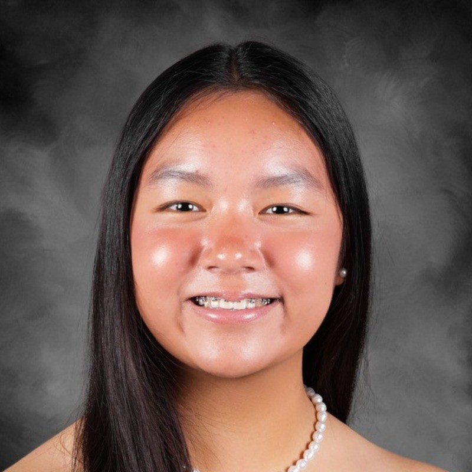

About Me
Hello, my name is Catherine Kong and I am an Undergraduate Computer Science Student at
the University of Florida's College of Engineering. I am extremely interested in exploring
both software and hardware disciplines as well as integrating AI into my studies, hoping
to make an impact in different fields, like the healthcare field for example.

Work Experience
K-12 Tutor
SC Tutoring Company | Orlando, FL
~ Enhancing students’ learning in grades K-12 through 1 hour online tutoring sessions in subjects like math and science.
~ Fostering an adaptive, positive, and technical environment for students to develop academically and personally.
Research
Evaluating the effectiveness of different convolutional neural networks in breast cancer detection
Involvement
STEPUP 31 Mentee Scholar
Developing academic, personal, and professional skills through a summer program for first-year engineers offering STEM, research, and career workshops and classes.
Networked with corporate speakers and university faculty, learning about their experiences and gaining practical advice.
STEAM Program Library Volunteer
~ Organized my local library and ran fun, educational STEAM-related events biweekly for kids, encouraging curiosity.
~ Gained 30+ hours serving the community and connected with curious kids and librarians.
Technical Skills
Languages: Python, JavaScript
Certifications: Practicum AI Beginner Series: Getting Started with AI, Computing for AI, Python for AI, Deep Learning Foundations, NVIDIA Fundamentals of Deep Learning, CS50 Intro to CS, Inventor, Revit
Awards and Honors
Florida Academics Scholarship (Paid tuition at any Florida Public Institution)  May 2025
AP Capstone Diploma (Recognition for qualifying exam scores and research, analysis, and communication skills) May 2025